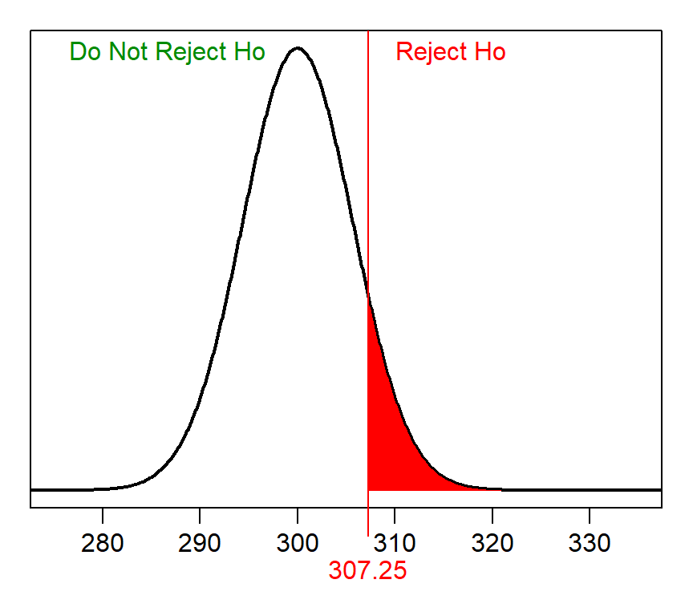
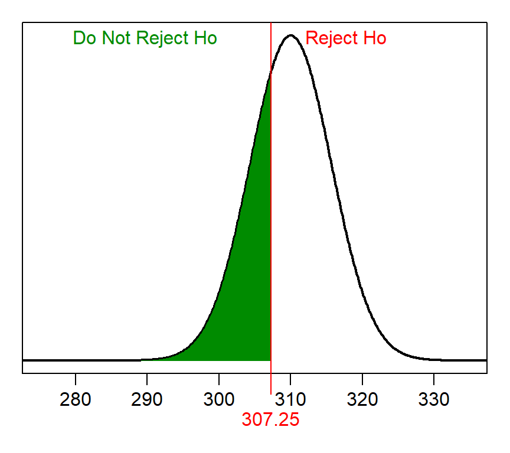
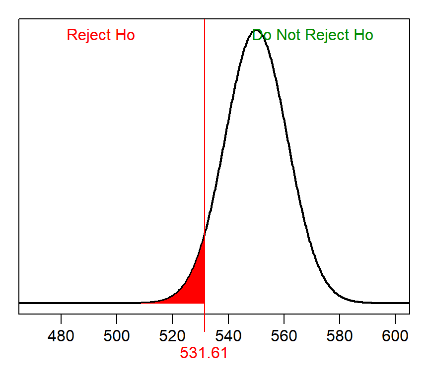
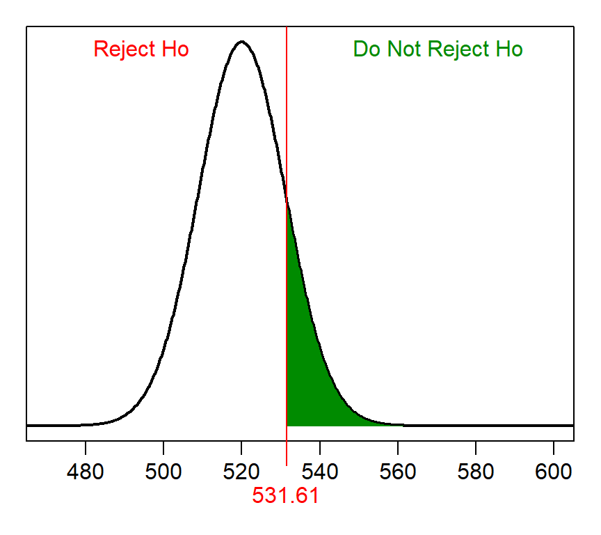

A Type II error is defined as not rejecting a false H0. The probability of making a Type II error is β, which cannot usually be calculated because one would have to know the true population mean. We calculated β in class, however, to demonstrate its concept and to see what types of things can change the relative size of β.
Calculating β requires knowing α, n, σ, the HA (and, thus, the H0), and the actual or true population mean. This example, defines these items as:
Calculating β is a four-step process. The first step is to identify the null distribution, or the sampling distribution assuming that H0 is true. In this case, the null distribution is normal (because n=40>30) with a mean of 300 (from assuming that H0 is true) and a standard ERROR of \(\frac{40}{\sqrt{50}}\)=5.657.
The second step is to identify the “rejection wall” on the null distribution. The rejection wall is the sample mean such that values “more extreme” represent rejecting H0. In this case, this would be the sample mean that has an area of α “greater” (because HA is a “greater than”). This REVERSE calculation on the null distribution is as follows:
> distrib(0.10,mean=300,sd=40/sqrt(50),type="q",lower.tail=FALSE)[1] 307.2496Thus, sample means greater than 307.25 will result in H0 being rejected, whereas smaller values will lead to H0 not being rejected. This rejection wall looks like the following on the null distribution.

The third step is to identify the ACTUAL distribution, or the sampling distribution centered on the true population mean. In this case, the actual distribution is also normal (because n=40>30) with a mean of 310 (from the actual population mean given above) and the same standard error of 5.657.
The fourth step is to compute the proportion of sample means in the “do not reject H0” region of the ACTUAL distribution. This FORWARD calculation is shown below and illustrated in the figure below.
> distrib(307.25,mean=310,sd=40/sqrt(50))[1] 0.3134354
Thus, β for this situation is 0.3134.
This example, defines these items as:
The null distribution in the first step is normal (because n=80>30) with a mean of 550 (from assuming that H0 is true) and a standard ERROR of \(\frac{100}{\sqrt{80}}\)=11.180. The “rejection wall” in the second step is 568.39, which has α “less” (because of HA).
> distrib(0.05,mean=550,sd=100/sqrt(80),type="q")[1] 531.61
The actual distributioin in the third step is normal with a mean of 520 and standard error of 11.180. The proportion of sample means in the “do not reject H0” region of the actual distribution for the fourth step is shown below and illustrated in the figure below. Thus, β is 0.1495.
> distrib(531.61,mean=520,sd=100/sqrt(80),lower.tail=FALSE)[1] 0.149535